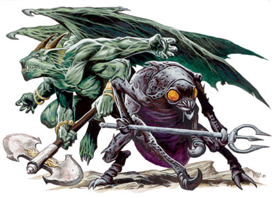
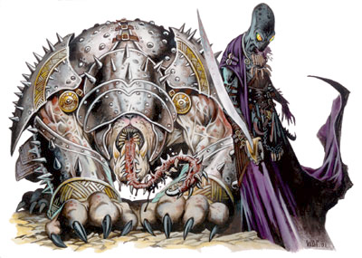

Yugoloths
Anciennement connus sous le nom de daemons, les yugoloths sont l'équivalent neutre mauvais des diables (LM) et des démons (CM). Moins populaires et moins connus que ces deux autres races de fiélons, les premiers yugoloths ont été créés par la communauté des guenaudes nocturnes de Géhenne, soit-disant sur ordre d'Asmodée. Mais les jalousies mesquines et les querelles sans fin qui conduisirent à la dissolution de cette communauté eurent aussi pour conséquences de donner leur indépendance aux yugoloths qui, depuis, offrent leur service aux plus offrants, comme des mercenaires. Ces créatures vivent maintenant sur les plans d'Achéron, de Géhenne, d'Hadès et de Carcères.
Les yugoloths incarnent l'idée du Mal avec un M majuscule. Ils mentent, ils trichent et trahissent par plaisir et par cupidité. Si les diables cherchent à dominer, les démons à détruire, eux cherchent à s'enrichir et aiment à le faire en causant autant de souffrances que possible à tout le monde. À la différence des démons, les yugoloths peuvent être raisonnés, mais à la différence des diables, on ne peut pas se fier à leur parole. Une armée de yugoloths est bien plus organisée qu'une horde de démons, mais bien moins qu'une légion de diables. En fait, un yugoloth invoqué ne craint pas la mort, car il sait qu'il se reformera sur son plan d'origine à Géhenne, seul endroit où il peut être réellement détruit. Cela explique leur comportement sur le plan matériel par exemple, où ils luttent sans merci pour atteindre leur but le plus souvent personnel.
Arcanaloth
Les arcanaloths (FP 12) tiennent le registre des contrats des yugoloths. Toutes les transactions pour les services rendus durant la Guerre de sang entre les diables et les démons passent par eux. Un arcanaloth ressemble à un humanoïde en robe avec une tête de chacal. Même si habituellement ils aboient pour exprimer leur haine ou leur colère, ce sont des êtres civilisés toujours bien habillés et qui se soignent. Principaux orateurs et diplomates de leur race, les arcanaloths peuvent parler et écrire toutes les langues. Ces lanceurs de sorts ont soif de connaissances, de richesses et de pouvoirs. Les arcanaloths habitent sur le plan de Géhenne qu'ils ne quittent que rarement, et seulement brièvement.
Canoloth
Les canoloths (FP 8) servent généralement de gardes dans les compagnies de mercenaires yugoloths. Ils ne sont pas aussi communs que les mezzoloths qui composent la majeure partie des unités de combat, mais quelques canoloths suffisent à augmenter l'efficacité d'une compagnie. Les canoloths ressemblent à de grands molosses monstrueux dotés de mâchoires massives, de courtes pattes et d'une longue langue épineuse. Ils peuvent communiquer avec des créatures semi-intelligentes ou supérieures au moyen d'un pouvoir inné de télépathie. Bien que parmi les yugoloths les plus faibles, ils sont bien considérés par les leaders et font d'excellents gardes pour les trésors ou les sites sensibles. Leur faible intelligence en fait en effet des créatures plutôt loyales en comparaison des autres yugoloths.
Dhergoloth
Les dhergoloths (FP 7) sont des yugoloths mineurs qui servent de mercenaires de base, comme les mezzoloths, mais moins chers et donc encore plus sacrifiables. Ils ont un corps d'insecte rond avec cinq bras et trois jambes. Leur tête semblable à celle d'un insecte tourne sur 360 degrés, ce qui leur permet de se déplacer et de changer de direction à une vitesse étonnante. Forts mais stupides, donc peu puissants au final, têtus de plus, ils sont mal considérés et mal traités au sein de la société yugolothe.
Hydroloth
Les hydroloths (FP 9) sont une force d'élite couramment utilisée par les yugoloths pour tendre des embuscades, surtout sous-marines. Ce sont des humanoïdes trapus avec un visage ressemblant à la tête d'une grenouille. Leur peau jaune est pleine de verrues et une membrane qui relie leurs bras et leur torse leur permet de descendre en planant lorsqu'ils s'élancent depuis une hauteur. Peu de yugoloths sont motivés comme les hydroloths. Ces monstres se complaisent dans la guerre et tirent leur force de la terreur qu'ils infligent aux mortels. S'ils préfèrent l'eau à tout autre environnement, on les trouve toutefois de partout. Plusieurs organes internes des hydroloths font d'excellentes composantes de sorts ou servent à des mélanges alchimiques.
Merrenoloth
Les merrenoloths (FP 3) sont un type spécial de yugoloths. Humanoïdes très minces, ils sont facilement identifiables à leur visage squelettique, leurs robes sombres à capuche et leurs yeux qui deviennent rouge lorsqu'ils sont en colère. C'est une espèce froide, mercenaire de cœur, comme tous les yugoloths. Leur particularité réside dans leur tâche unique et exclusive qui consiste à conduire les petites embarcations qui naviguent sur les eaux noires du Styx. Ce sont parmi les yugoloths les plus neutres, se faisant payer pour leurs services et rien d'autre. Ils restent à l'écart des affaires politiques.
Mezzoloth
Les mezzoloths (FP 5) sont les yugoloths les plus communs. Ils sont aussi nombreux que misérables et ressemblent à des insectes de taille humaine de couleur ivoire avec de longs bras et de longues jambes, un grand crâne et des griffes acérées. Leurs yeux sont rouges et brillants. Ils manient une forme de télépathie qui leur permet de communiquer avec d'autres créatures intelligentes. Les mezzoloths servent de fantassins dans les armées yugolothes, mais leur manque d'intelligence en fait surtout de la chair à canon, les mezzoloths obéissant aux ordres sans discuter. Les sévices qu'ils subissent les rendent encore plus vicieux et les endurcissent pour les combats.
Nycaloth
Observateurs, les nycaloths (FP 9) explorent les plans. Avec leur apparence de gargouilles, ils ressemblent à des démons. Ce sont de grands humanoïdes aux ailes et aux membres puissants, à la peau épaisse vert-clair et aux griffes acérées qui font d'excellentes armes. Leur faculté à se téléporter et à se rendre invisible à volonté en font de redoutables adversaires. De tous les yugoloths, ce sont les plus loyaux, tant qu'on les traite correctement. Les femelles donnent naissance à trois jeunes à la fois, lesquels grandissent durant 100 jours. À ce stade, ils doivent s'affronter les uns contre les autres dans une bataille à mort dont un seul sortira vivant.
Oinoloth
TITRE OU TYPE ?
Dans les versions précédentes de D&D, Oinoloth était un titre. À D&D 5 cela devient un type de yugoloths.
Spectres sinistres, les oinoloths (FP 12) sèment la peste partout où ils vont. Leur simple apparence peut faire rompre leurs rangs aux soldats des armées adverses. C'est la solution ultime aux problèmes les plus graves, ceux que l'on embauche en dernier recours, lorsqu'un siège a duré trop longtemps ou qu'une armée s'est révélée trop forte pour être vaincue. Les oinoloths empoisonnent le sol et rendent malades les créatures qu'ils rencontrent. Ils sont parfois aussi embauchés pour dissiper les fléaux qu'ils ont propagés, mais leur prix pour ce travail est très élevé et le résultat pas toujours à la hauteur des espérances.
Ultroloth
Les ultroloths (FP 13) sont les plus étranges et énigmatiques des yugoloths. Ces yugoloths dominants apparaissent comme des humanoïdes à la tête allongée et au visage sans trait, hormis de grands yeux qui brillent tels des opales en feu. Ils ont la peau grise et portent généralement des capes. Ce sont eux qui commandent les armées yugolothes de la Guerre de sang, mais ils restent pour leur part toujours en arrière. Les ultroloths exercent une domination totale sur leurs subalternes par leur force de volonté et leur réputation de cruauté. Ils représentent le niveau ultime de la corruption. Peu de choses se passent dans les rangs des mercenaires que ces êtres ne sachent pas.
Yagnoloth
Les yagnoloths (FP 11) sont les nobles de la société yugolothe. Ce sont de grandes et horribles créatures humanoïdes avec deux bras inégaux, l'un de taille humaine et l'autre géant, et ils en cachent toujours l'un des deux sous une cape. Ils ont une peau rouge écailleuse, des muscles volumineux et des têtes horribles avec de petites ailes à la place des oreilles. Les yagnoloths se soucient peu des problèmes des mercenaires. Ils vivent du travail de leurs semblables et ne produisent rien de valeur. Personne ne sait ce qui a conduit les ultroloths à placer ces créatures au commandement des provinces. Leurs mérites sont bien cachés. Ils communiquent par télépathie.
